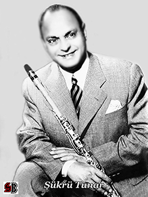

KLARNET
Klarnetin Tarihçesi
Klarnet, tarihi 19. yüzyılda Chalumeau (Şalümo) adıyla orkestralarda icra edilen bu nefesli saz klarnetin atasıydı. Fransızcadan gelen bu isim nefesli sazların genel adıydı. Aynı yüzyılda Denner adlı çalgı yapım ustası Şalümo'yu geliştirerek bugünkü sisteme doğru ilk adımı atmıştır. 18. yüzyılda keşfedilen enstrümanın orkestraya dâhil edilmesi 1750 yılında olmuştur. 1800'lü yıllarda klarnetin oda orkestralarında yaygınlaşmasında Mozart'ın rolünün büyük olduğu bilinmektedir. 1812'de Paris Konservatuvarında öğretim üyesi olan Ivan Müller klarnete farklı mekanikler ekledi. Müller'in 13 tuşlu hale getirdiği enstrüman Denner'in sistemine göre daha karmaşıktı. 1840 yılında ses sistemleri için metal tuş mekanizması flüt ve obuada olduğu gibi klarnette de kullanılmıştır. Paris Konservatuvarı Klarnet bölümü öğretim üyesi Klose, Boehm Sistemi'ni klarnete uyguladıktan sonra 1860 yılına kadar enstrüman üzerinde mekanik gelişmeler devam etti. 1900-1925 yılları arasında klarnet artık radyo ve stüdyo kayıtlarında önemli yer tutmaya başladı. Perde sistemlerinin esas amacı akustiğin daha kaliteli elde edilmesi yönünde idi. Şalümo ile 1600'lerde 1,5 oktav ses genişliğiyle yola çıkan klarnet Mozart'ın konçerto ve Quintetlerinde yumuşak ve koyu sesiyle klasik, caz ve pop orkestralarının vazgeçilmez nefesli sazı olarak bugün konservatuvarlarda eğitim metotlarında ve müzik literatüründe yerini almıştır.
Gittikçe gelişen, yayılan ve müzik dünyasının olmazsa olmazı haline gelen klarnet, büyük bir özveri ve sevgi ile çalınan bir müzik aletidir. Dinleyenin ruhuna huzurlu bir esinti verirken, çalanın içinde büyük bir aşk yaşatır. Ülkemizde bilinen en ünlü klarnetçiler Şükrü Tunar, Mustafa Kandıralı, en eskiler olarak, ilk sırada yer almaktadır.
 Sayfanın Başına Dön
Sayfanın Başına Dön